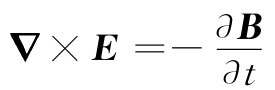
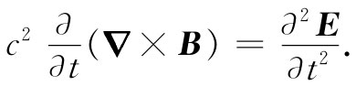
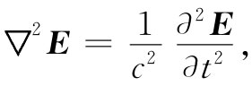

现在要转到三维波的课题上来。我们已经看到，矢量E满足波动方程。通过由麦克斯韦方程组所做的直接论证不难得出这同样的结论。假设我们是从方程

出发，并取两边的旋度
你将记得，任何矢量旋度的旋度都可以写成两项之和，其中一项含有散度而另一项含有拉普拉斯算符，即
▽×（▽×E）=▽（▽·E）-▽2 E.
然而，在自由空间里，E的散度等于零。因而只有拉普拉斯算符那一项才保留着。并且，根据自由空间中第Ⅳ个麦克斯韦方程［式（20.12）］，c2 ▽×B的时间微商即是E对t的二次微商：

于是式（20.26）就成为

上式是三维波动方程。若要反映出它的全部光辉，这一方程当然就是
我们将如何找出波动方程的通解呢？答案是所有三维波动方程的解都可以表示为我们已找到的一维解的叠加，通过假定场并不依赖于y和z，我们已获得在x方向上运动的波的表示式。显然，还存在别的解，其中场并不依赖于x和z，它表示波在y方向上行进。然后还有与x和y都无关的解，它代表沿z方向传播的波。或者一般说来，由于我们已将方程写成了矢量形式，所以三维波动方程可以有在各点朝任何一个方向运动着的平面波之解。再则，由于那些方程都是线性的，因而可以同时具有任意多的、沿各种不同方向传播的平面波。这样，三维波动方程的最一般解就是在各种不同方向运动的所有各种平面波的叠加。
试想象此刻存在于这个课堂空间中的电场和磁场像什么样子。首先，有一个恒定磁场，它来自地球内部的电流——也就是地球的恒定磁场。然后，还有一些不规则的、几乎是静态的电场，这或许是由于各人在其椅子上移动并以其大衣袖口擦过椅臂时由于摩擦引起的电荷所产生的。然后也存在由电线里的振动电流所产生的其他磁场——以60Hz的频率变化着、并且与水坝的发电机同步的场。但更为有趣的是那些以高得多的频率变化着的电场和磁场。例如，当光从窗口至地板、从这面壁至那面壁传播时，就会有电场和磁场的微小摆动以186000miles-1 的速率跟着运动。然后也有从各个温暖的前额跑向较冷的黑板上的红外线。而我们已经把那些紫外光、X射线以及通过这个房间传播的各种无线电波都忘记了。
飞过这个房间里的还包括载有爵士乐队音乐的那些电磁波，也有由那些代表着世界上其他各地方发生的事故的图像、或代表着那种想象的退热药阿司匹林溶解在想象的肚子里的图像的一系列脉冲所调制了的那些波。要演示这些波的真实性，只需打开那种能把这些波转变成图像和声音的电子设备就行了。
如果我们更加详细地分析到那些甚至是最微小的摆动，便会发现从遥远距离进入这房间里的细小电磁波。此刻就有这一种电场的微小振动，其波峰相距一英尺，那是来自几兆英里以外、由水手二号空间飞船刚刚经过金星时所传送到地球表面上来的。它的信号载着它从那个行星所收集到的信息概要（信息由该行星传播至空间飞船上的电磁波所提供）。
此外还有电场和磁场的十分微小摆动，那是发源于几十亿光年以外——从宇宙间最遥远角落里的星系送来的波。这件事情的真实性已由“用装满导线的房间”——即由建立像这房间那么大的天线组——证明了。这种从最大光学望远镜观测范围以外空间中一些地方来的无线电波被探测到了。甚至那些光学望远镜也不过是电磁波的收集器而已。所谓星星，只是一些推断，即从它们那里所已经获得的唯一物理实质所做出的推断——对到达地面上我们这里的电场和磁场的无比复杂的波动做了仔细研究而得出的结果。
当然，还有更多的电磁场：从若干英里外的闪电所产生的场，那些带电的宇宙射线粒子当其嘘嘘地通过我们的房间里时的场，此外还有更多更多。围绕着你四周的空间电场竟会如此复杂！但它却始终满足三维波动方程式。